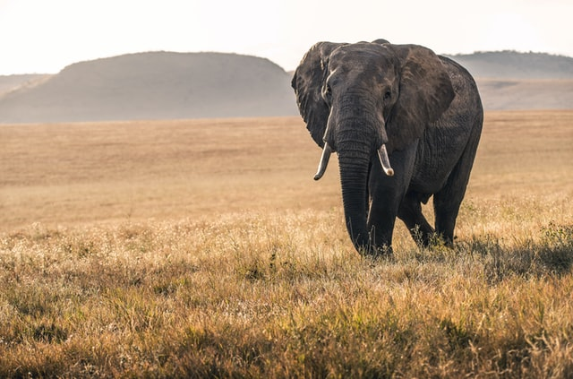

Why are trees so important?
Trees are vital. As the biggest plants on the planet, they give us oxygen, store carbon, stabilise the soil and give life to the world’s wildlife. They also provide us with the materials for tools and shelter.

Trees benefit health
The canopies of trees act as a physical filter, trapping dust and absorbing pollutants from the air. Each individual tree removes up to 1.7 kilos every year.
Trees benefit the environment
They reduce wind speeds and cool the air as they lose moisture and reflect heat upwards from their leaves. It’s estimated that trees can reduce the temperature.
Trees strengthen communities
Trees strengthen the distinctive character of a place and encourage local pride. Urban woodland can be used as an educational resource and to bring groups together for activities like walking and bird-watching.
Trees protect the future
Soon, for the first time in history, the number of people with homes in cities will outstrip those living in the countryside. Parks and trees will become an even more vital component of urban life.
Protecting Wildlife
From seed to dirt, trees are an important element of the landscape for wildlife.
A tree's life cycle moves from seed to seedling to tree to snag to decaying to dirt. Along the pathway, wildlife and other plants are depending on the tree.

Trees support the lives of many large organisms. Trees are used for food, shelter, and sites for reproduction. Many animals also use trees for resting, nesting and for places from which to hunt or capture prey.When the trees mature, animals are able to enjoy delicious fruits and foraging opportunities. During times of extreme heat or precipitation, animals can seek shade and shelter under the trees without being away from their food source.
Trees support the lives of many large organisms. Trees are used for food, shelter, and sites for reproduction. Many animals also use trees for resting, nesting and for places from which to hunt or capture prey.When the trees mature, animals are able to enjoy delicious fruits and foraging opportunities. During times of extreme heat or precipitation, animals can seek shade and shelter under the trees without being away from their food source.
